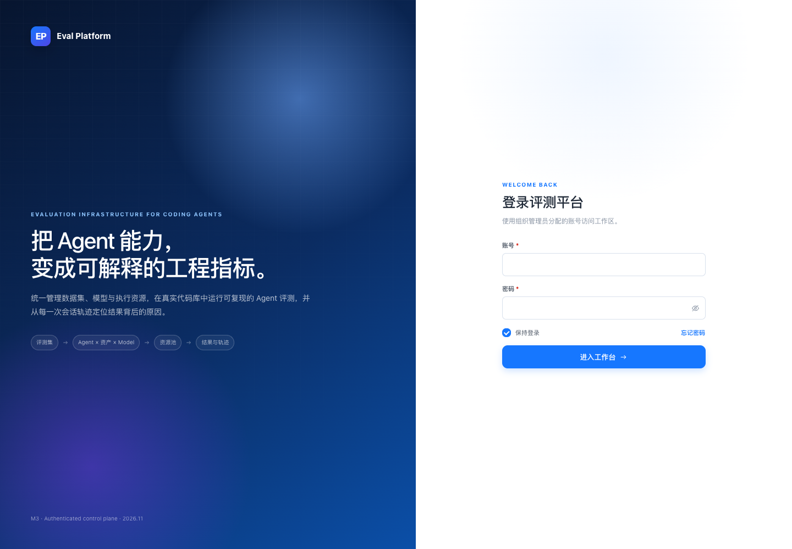
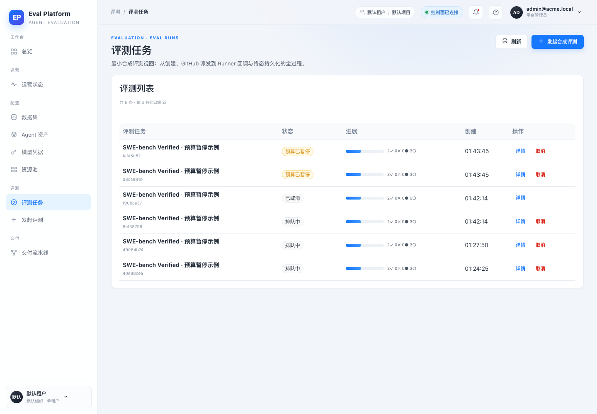
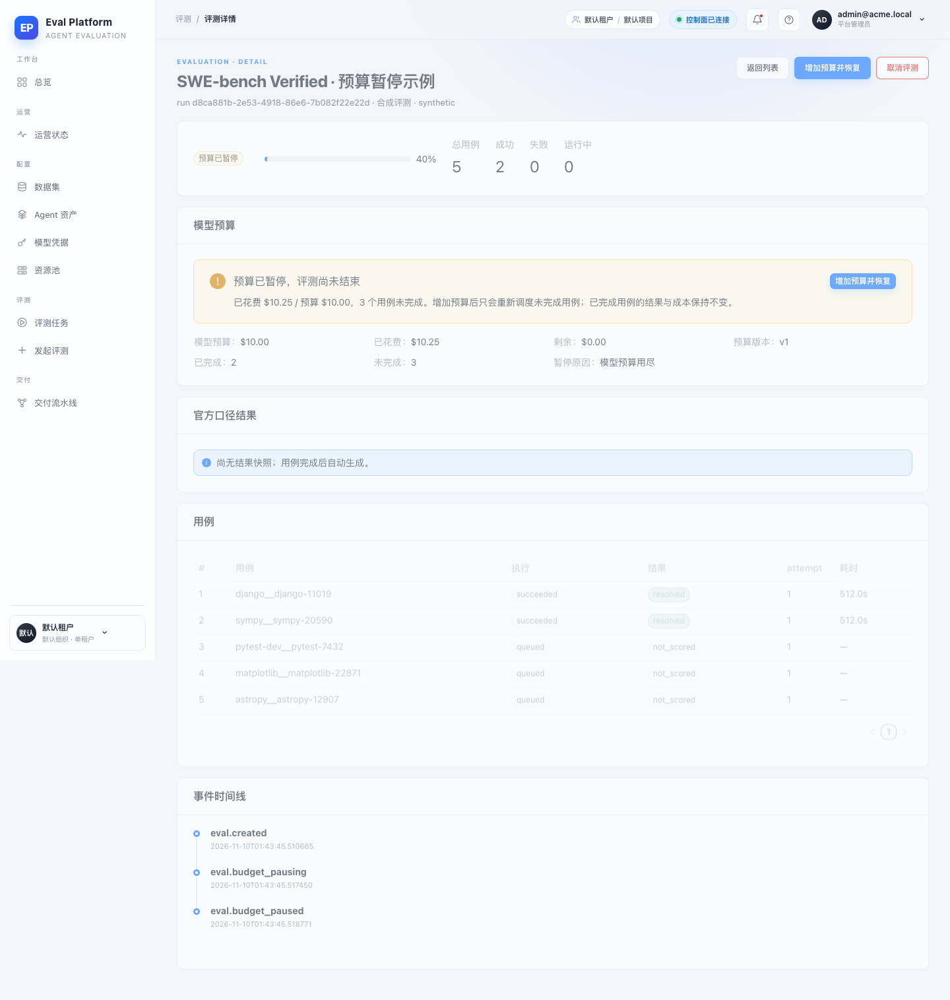
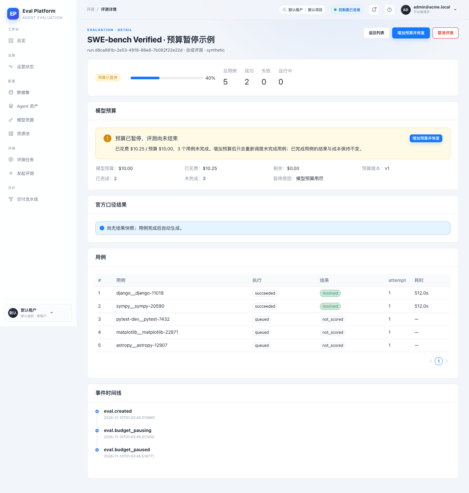
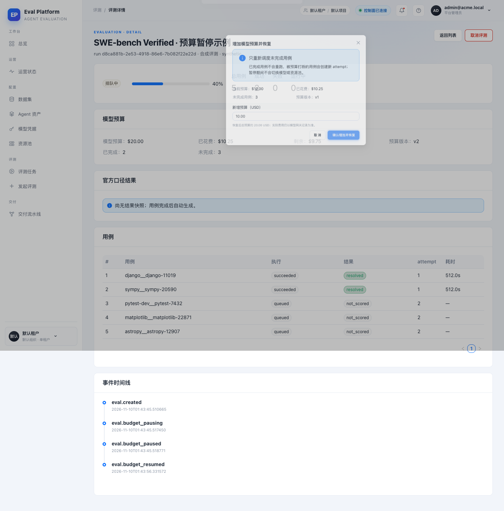
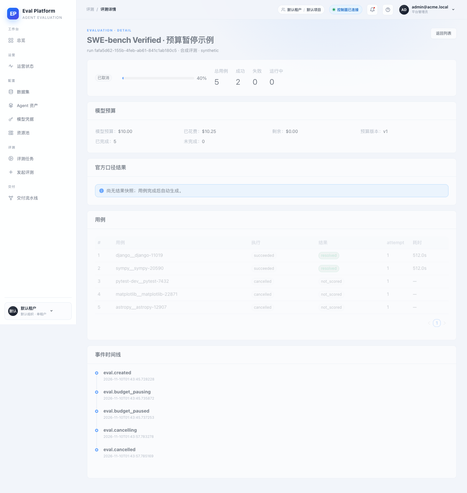

- 应用
- AI Eval Platform 本地开发栈（FastAPI + Vite React）
- Commit
- 664a1bf（代码 head 4a77705）
- 分支
- agent/complete-m4-05-9fcc5750edff
- 数据库
- SQLite 演示库 + 迁移 0014_budget_pause_resume
- 浏览器
- 系统 Chrome headless · 1440×1000 · Playwright 驱动
- 数据形态
- 合成评测 5 用例：2 已完成、3 未完成；预算 $10，已花费 $10.25，paused_budget
- 账号
- 本地演示管理员（凭据不写入报告）
Browser smoke · 真实登录 / 详情 / 恢复 / 取消
M4-05 模型预算暂停与恢复 · 集成冒烟报告
对 M4-05 预算暂停与恢复做了一次端到端浏览器冒烟：从登录、评测列表状态、暂停详情、确认弹窗、恢复调度，到版本冲突与暂停后取消。9 个场景、26 项断言全部通过；未发现需要修复的产品缺陷。
9冒烟场景
26断言
0发现缺陷
404后端单测通过
Environment and Artifact
2026-11-10 · AI Eval Platform · M4-05Scenario Matrix
9 pass| # | 场景 | 结果 | 说明 | 证据 |
|---|---|---|---|---|
| 01 | 登录页与登录 | PASS | 登录页渲染品牌与表单；使用本地演示管理员登录后进入工作台。 | screenshots/01-login.png |
| 02 | 评测列表状态 | PASS | 列表行显示“预算已暂停”标签，未误显示为失败或部分成功。 | screenshots/02-evals-list-paused.png |
| 03 | 暂停详情与预算信息 | PASS | 详情页展示预算 $10.00、已花费 $10.25、剩余 $0.00、版本 v1、已完成 2、未完成 3 与暂停原因；“评测尚未结束”告警出现。 | screenshots/03-detail-paused.png |
| 04 | 确认弹窗输入校验 | PASS | 清空新增预算时“确认增加并恢复”禁用；输入 10 后恢复可用，弹窗展示只重跑未完成用例与恢复后总预算。 | screenshots/04-resume-confirm.png |
| 05 | 恢复调度 | PASS | 确认后提示“已增加预算，重新调度 3 个未完成用例”；状态变为排队中，预算 $20.00，版本 v2。 | screenshots/05-resumed.png |
| 06 | 恢复后的 API 不变量 | PASS | GET 详情：status=queued、budget_version=2、model_budget_usd=20；3 个未完成用例 latest_attempt_no=2，2 个已完成用例仍为 attempt 1。 | No screenshot; API assertions recorded in the smoke run. |
| 07 | 重复恢复 / 版本冲突 | PASS | 用旧版本 1 再次 POST resume-budget 返回 409 budget_version_conflict；再次读取预算仍为 $20、版本仍为 2，没有重复加预算。 | No screenshot; API assertions recorded in the smoke run. |
| 08 | 未登录访问受保护页面 | PASS | 新浏览器上下文访问 /evals 被重定向到 /login?next=%2Fevals。 | No screenshot; URL assertion recorded. |
| 09 | 暂停后取消 | PASS | 暂停态点击取消后，run 进入 cancelled 且有 finished_at；页面显示“已取消”，事件时间线包含 eval.cancelled，没有卡在 cancelling。 | screenshots/06-cancelled-after-pause.png |
Issues and Observations
No defects foundNo defects were found.
Evidence
6 screenshots





Automated Coverage Assessment
6 areas reviewed| 领域 | 覆盖方式 | 结论 | 建议 |
|---|---|---|---|
Conclusion
通过，可进入人工验收9 个浏览器场景与 26 项断言全部通过，未发现需要修复的产品缺陷；暂停、恢复、版本冲突与暂停后取消均按设计工作。
- 真实模型 provider 未在本次冒烟中调用，费用路径由 ModelUsage 数据确定性构造。
- CI 的 flow-online 依赖 PR 与 GitHub Project 关联，已由人工完成。
由 Playwright 驱动系统 Chrome 采集 · 本地演示数据 · 不含凭据或令牌。